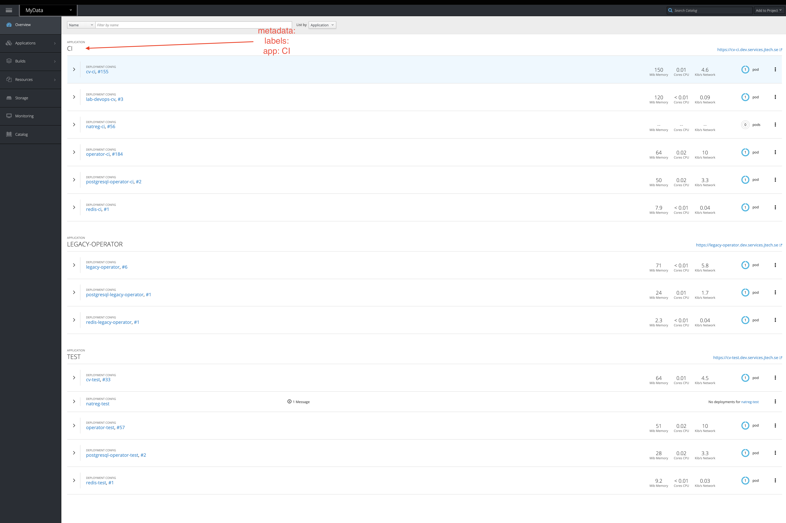
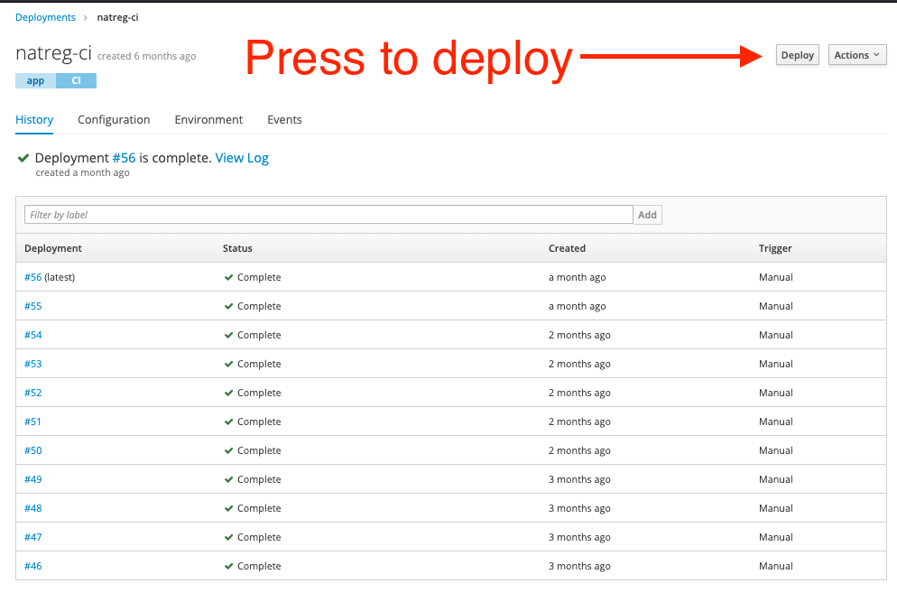

Example-National-Registration
This guide should help you setup from scratch or understand how the CI for example-national-registration is configured
Step 1 - creating a deployment, service and route in OpenShift (The one where things are done manual)
All the files for OpenShift are in the openshift folder.
The README has a generic instructions list how to create every environment but we will go into more details in this tutorial
If you use the existing OpenShift project these resources are already created in the cluster
We choose to store the configurations in Github and use it for version control and then use
octo create or apply changes when neededWe separate environments into separate folders inside the openshift folder (
ci, test)ciis the environment that uses the latest Docker images (we set the taglatestfor the Docker image inside the deployment configuration) and is being redeployed automatically through Travis CI when the following conditions are satisfied:- code is pushed/merged to the
masterbranch semantic-releasedetermined that a new release should be created based on the commits since the last release (meaningchore:ordocs:commits do not trigger releases)testis the environment that uses semver tags for the Docker images in the deployment configurations and deployments are manual using a deploy script
All OpenShift resources for a specific environment are grouped using
metadata.labels.appfor example settingmetadata.labels.app: CIwould make it look like this inside OpenShift:

The above grouping is achieved by adding the
label app: CIorselector app: CIas you can see in theymlfiles like (orTESTfor the test ones):metadata: labels: app: CIselector: app: CIFor every environment (let’s use ci folder as an example) we divided the resources needed for a specific service into separate files for every OpenShift resource that it needs and they follow the naming convention like
[Service name]-[OpenShift Resource Type].ymlSo in the case of the
example-national-registrationthere would be a DeploymentConfig namednatreg-DeploymentConfig.yml, Service namednatreg-Service.ymland Route namednatreg-Route.ymlIf at this point you are confused with the OpenShift Resource Types (deployment config, service, route) here is a quick explanation:
- a
DeploymentConfigis a template for your deployment, here you customize number of replicas you want to run, rolling strategies, Docker image that your containers should run and environment variables - a
Serviceserves as an internal load balancer that identifies a set of pods in order to proxy connections that it receives to them. The use case of a Service is to be able to access a pod created by our deployment with a specified name inside the cluster. - a
Routeis the way we expose aServiceby having an external reachable hostname, and also configure things like TLS. So that means that for some applications that don’t need external access, we don’t create a Route (like in the case for postgres or redis)
- a
In theory for the existing project for the
ciapplication you should not need to make any changes to the example-national-registration files, but when you want to add new environment variables, modify existing ones, change rules for the Service or Route you can make the changes, apply them by running any of the commands related to your changed file and remember to commit and push the changes to Github:- Navigate to where you cloned infrastructure repository and then:
oc apply -f openshift/ci/natreg-DeploymentConfig.ymloc apply -f openshift/ci/natreg-Service.ymloc apply -f openshift/ci/natreg-Route.ymlsometimes some changes (like for the Route) require you to delete it first (
oc delete -f openshift/ci/natreg-Route.yml) and then apply
The same commands apply even when you want to create things from scratch, just make sure you have created the secrets and apply the above files:
If you check the deployment config for example-national-registration in the
cifolder you can see that it uses thelatesttag of the Docker image and the pull policy is set to Always (which means that it will always try to retrieve the latest from Dockerhub)image: jobtechswe/mydata-natreg:latest imagePullPolicy: AlwaysNow if you have manually built the Dockerfile in the example-national-registration folder and pushed it to Dockerhub you could manually trigger a redeploy from the OpenShift interface by pressing the
Deploybutton as shown below:

- However let’s go further and discover how things are automated with Travis
Step 2 - automating things with Travis and semantic-release (The one where life gets easier)
We use Travis CI to build, test and deploy. It is free as long as the project you build is open source
The way Travis CI works is that everytime your repository is updated (new branch, new commit, new tag) it picks up that branch and will run the specified tasks from your configuration
We use semantic-release for automating the package release workflow based on the commit messages
The Travis configuration is rather simple and consists of 2 stages (
lint-and-testandpublish)lint-and-teststage runs for every branch (exceptmaster) and it will install npm dependencies, run lint and unit tests; This is a good tool that assists you when you review a pull-request as you can see that tests are failing or passingpublishstage runs only on themasterbranch and it installs the OpenShift cli and then runssemantic-release
We also set several environment variable inside Travis:
DOCKER_PASSWORDandDOCKER_USERNAMEfor pushing the Docker imageGITHUB_TOKENis used for push back to Github a new release, update CHANGELOG (it needs to have write access to the repository)OPENSHIFT_URLis the url of the OpenShift clusterOPENSHIFT_TOKENis needed for being able to redeploy the natreg-ci. This README should explain how to create a service account and retrieve it’s tokenOPENSHIFT_CERTis used so that the communication with the cluster is secured. For this we need the intermediate certificate for the cluster and uploading it to Travis. This README should explain how to get the certificate, base64 encode it and then save it as an environment variable
For
semantic-releasewe have the following dev dependencies (plugins) installed at the time of writing this (semantic-releasecomes with a set of plugins included and some we install and explain further down):"@semantic-release/changelog": "^3.0.4", "@semantic-release/exec": "^3.3.7", "@semantic-release/git": "^7.0.16", "semantic-release": "^15.13.24", "semantic-release-docker": "^2.2.0",We mostly use semantic-release plugins with the default configuration and the pipeline for it looks as follows as defined in the .releaserc.json
{ "plugins": [ "@semantic-release/commit-analyzer", "@semantic-release/release-notes-generator", "@semantic-release/changelog", [ "@semantic-release/npm", { "npmPublish": false } ], "@semantic-release/github", "@semantic-release/git", [ "@semantic-release/exec", { "publishCmd": "docker build -t jobtechswe/mydata-natreg ." } ], [ "semantic-release-docker", { "registryUrl": "docker.io", "name": "jobtechswe/mydata-natreg" } ], [ "@semantic-release/exec", { "publishCmd": "bash ./.deploy.bash ${nextRelease.version}" } ] ] }Now let’s dive deeper into each plugin and what and why we do things in this way:
@semantic-release/commit-analyzeris the one that analyzes commits since the last release and determines if a new and what type of release should be made; It is going to retrieve the latest Git tag from the Github repo and go through the commits made since that tag and determine if a new release should be made (that is iffix:orfeat:commits are present)!!! IMPORTANT NOTICE: If you add
semantic-releaseto a new project and don’t want your first release to bump directly to 1.0.0 you should manually create a git tag likegit tag v0.0.0in case you have initialized your repo version with 0.0.0 in thepackage.jsonand push the tag to remote before runningsemantic-release. This will make so that it determines the next version based on 0.0.0 !!!@semantic-release/release-notes-generatoris the one that makes the release notes look nice like this:

@semantic-release/changelogis the module that creates and updates the CHANGELOG@semantic-release/npmis used with the option"npmPublish": false(so it won’t actually publish to npm) since it’s the one that will update the version insidepackage.jsonwhich we want updated@semantic-release/githubis the one that pushes the new tag and release notes back to Github and needs theGITHUB_TOKENenvironment variable set in Travis@semantic-release/gitis an extra plugin that we added because we want to commit and push back to Github the updatedCHANGELOG.mdandpackage.json. Without this module thepackage.jsonis never pushed back to Github, this isn’t a problem sincesemantic-releasedetermines the next version based on existing Git tags but it’s nice to have it updated. It uses the default configuration and commits withchore:which will not trigger a new release.

@semantic-release/execis used to execute custom shell commands. We use it for building the Docker image and deploying to OpenShift
You might notice that we only build the Docker image at this stage. The reason for that is so that we include the updated
package.jsonin the new Docker imagesemantic-release-dockeris used for publishing the Docker image to Dockerhub. We specify the name of the registry and image.
This one will push both the
latesttag and a semver tag (like0.31.1if that is the next version thatsemantic-releasedetermined that it will release)We run
@semantic-release/execas the final step where we redeploy thenatreg-ciin OpenShiftTaking a look at the contents of .deploy.bash we login towards the OpenShift cluster using the service account that we have created and run a deploy command and then we logout and delete the certificate from the machine where we ran the Travis tasks:
oc rollout latest natreg-ci -n mydata
Step 3 - deploy to the test environment
If you have followed along so far and have pushed to the
masterbranch a commit that is either afix:or afeat:or maybe afeat:that includes aBREAKING CHANGES:you will see thatnatreg-cihas redeployed your changes when Travis completed thepublishstage.Now you might want to deploy to
natreg-testin OpenShift.As described above in Step 1, you saw how we group resources in OpenShift using an
app:label/selector.The files for the
testenvironment are inside the test folderThey are created the same way as we did for
ciwith the difference inside the deployment config being the image that is set to a semver tagimage: jobtechswe/mydata-natreg:0.31.1We don’t have an automated process for updating the test applications and we run it manual using a script
This script will check Dockerhub for the tag that you are saying that you want to release, updates the local
ymlfile inside thetestfolder, applies them to the cluster and then stages and commits theymlfile.What is left for you to do is push them back to Github.